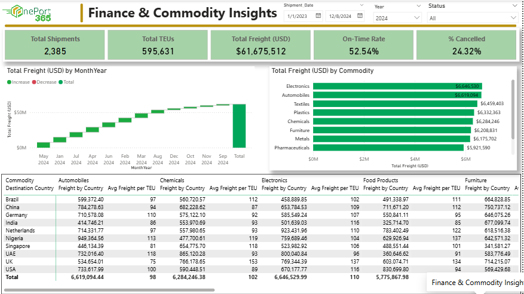
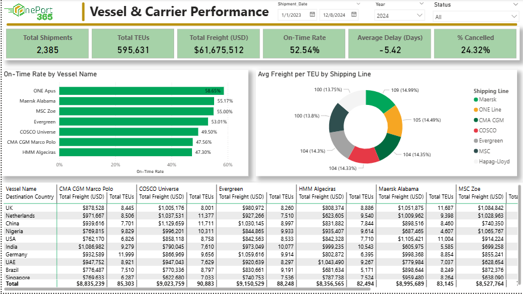

Dashboard Overview



Case Study Breakdown
Problem Statement
The client struggled with tracking shipment delays and understanding carrier performance across multiple global routes due to siloed data and manual Excel reporting. This led to operational bottlenecks and revenue loss.
Data Sources & Prep
Extracted over 500,000 rows of logistics data from an internal ERP system. Used Power Query and SQL to clean inconsistencies, handle missing values, map geographic coordinates, and merge related fact tables.
Analysis Approach
Developed a robust Star Schema data model optimized for performance. Created complex DAX measures for Time Intelligence (YTD, QTD) and dynamic KPI tracking to monitor carrier efficiency and commodity trends.
Key Insights & Impact
Identified a 15% bottleneck in specific trade routes. Automated the reporting process, saving the analytics team 10+ hours of manual data entry per week and providing stakeholders with real-time strategic visibility.